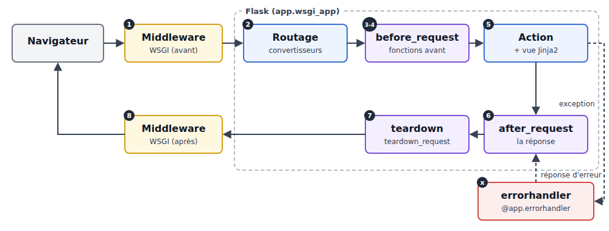
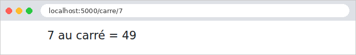
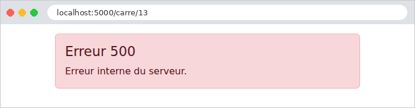

7. Le cycle de vie d'une requête
Entre l'arrivée d'une requête et le départ de sa réponse, [Flask] enchaîne plusieurs étapes, et l'application peut intervenir à chacune d'elles. Nous en avons déjà rencontré plusieurs : les convertisseurs de variables de chemin (exemples 02 et 12), les fonctions [before_request] (exemples 16, 22 et 23), les gestionnaires d'erreurs (exemples 08 et 12). Ce chapitre les réunit dans un seul exemple, qui affiche dans la console un message à chaque étape, pour en observer l'ordre :

- 1 et 8. Le middleware WSGI. [WSGI] (*Web Server Gateway Interface*) est la norme qui relie un serveur web écrit en [Python] à une application. Pour le serveur, une application [Flask] n'est qu'un objet appelable, qui reçoit la description de la requête et produit la réponse. Un middleware est un objet de même nature qui enveloppe l'application : il voit passer la requête avant [Flask], et la réponse après. C'est l'équivalent des filtres de servlet de [Java] ;
- 2. Le routage. [Flask] cherche la route qui correspond à l'URL, et les convertisseurs de la route transforment les variables du chemin ;
- 3 et 4. Les fonctions *[before_request]***, exécutées dans l'ordre de leur enregistrement. Si l'une d'elles rend une réponse (ou lève une exception), le traitement s'arrête là : l'action n'est pas appelée. C'est l'endroit où l'on vérifie qu'un utilisateur est connecté (chapitre suivant) ;
- 5. L'action, et la vue qu'elle fait fabriquer ;
- 6. Les fonctions *[after_request], qui reçoivent la réponse, peuvent la modifier (ajouter un entête, un cookie), et doivent la rendre. Elles sont exécutées dans l'ordre *inverse de leur enregistrement ;
- 7. Les fonctions *[teardown_request], exécutées à la toute fin, *toujours, même si une exception a interrompu le traitement. Elles ne peuvent plus changer la réponse : elles servent à libérer des ressources (fermer une connexion à une base de données, par exemple) ;
- x. Les gestionnaires d'erreurs ([errorhandler]) : une exception levée par une fonction [before_request], par l'action ou par la vue est confiée au gestionnaire enregistré pour sa classe, qui fabrique une réponse d'erreur. Cette réponse passe ensuite par les fonctions [after_request], comme une réponse ordinaire.
C'est l'équivalent des intercepteurs de [Spring MVC] et des filtres d'action d'[ASP.NET Core MVC]. Les fonctions [before_request], [after_request] et [teardown_request] sont souvent appelées des crochets (*hooks*).
7.1. Exemple 24 : les étapes du traitement d'une requête
L'application n'a qu'une action, qui calcule le carré d'un entier : [/carre/7]. Selon l'URL, elle réussit, ou elle échoue de différentes façons.
7.1.1. Le middleware WSGI : filtres/journal.py
- ligne 7 : le middleware reçoit l'application qu'il enveloppe ;
- ligne 10 : la méthode spéciale [__call__] rend l'objet appelable : [middleware(environ, start_response)] exécute cette méthode. C'est la signature qu'impose [WSGI] : [environ] est un dictionnaire qui décrit la requête (la méthode dans [REQUEST_METHOD], le chemin dans [PATH_INFO], les paramètres dans [QUERY_STRING], les entêtes...) ; [start_response] est une fonction fournie par le serveur, que l'application appelle pour annoncer le code et les entêtes de la réponse ;
- lignes 12-17 : le middleware affiche la requête. C'est le message n° 1 : rien ne s'est encore passé dans [Flask] ;
- lignes 22-24 : pour connaître le code de la réponse, le middleware passe à l'application, à la place de [start_response], une fonction à lui, qui note le code au passage, puis appelle la vraie. C'est une fonction interne (définie dans une autre fonction) : elle a accès aux variables de la fonction qui la contient, ici la liste [statut] ;
- ligne 27 : l'appel de l'application enveloppée : toute la suite du traitement se déroule dans cet appel ;
- ligne 28 : le message n° 8, quand [Flask] a terminé.
Un middleware travaille au niveau de [WSGI] : il ne connaît ni [request], ni [g], ni les routes de [Flask]. On l'utilise pour des traitements qui concernent toutes les requêtes, indépendamment de l'application : journalisation, compression, prise en compte d'un proxy... [Werkzeug] en fournit quelques-uns, comme [ProxyFix], qui corrige l'adresse du client quand l'application est placée derrière un serveur mandataire (l'étude de cas en parle, à propos de l'adresse IP des clients).
7.1.2. Le convertisseur : filtres/entier.py
Un convertisseur (exemple 12) qui accepte n'importe quel morceau de chemin ([[^/]+] : un ou plusieurs caractères autres que [/]), et le convertit en entier, ou en [None] s'il n'en est pas un. Contrairement à [<int:n>], qui rendrait une page 404 pour [/carre/abc], c'est ici l'action qui décidera. Il affiche le message n° 2.
7.1.3. Des actions marquées : filtres/marques.py
Les fonctions [before_request] s'exécutent avant toutes les actions. Souvent, un traitement ne concerne que certaines d'entre elles. Une façon simple de les désigner est de les marquer :
Ces deux décorateurs ne changent rien à l'action : ils lui ajoutent un attribut (en [Python], une fonction est un objet, auquel on peut ajouter des attributs), et la rendent telle quelle. Les fonctions [before_request] chercheront ces marques sur l'action visée par la requête.
7.1.4. Les crochets : filtres/crochets.py
- lignes 10-11 : l'action qui va traiter la requête. Après le routage, [request.endpoint] contient le nom de la route choisie ([calcul.carre] : le nom du blueprint, un point, le nom de la fonction) ; [current_app.view_functions] est le dictionnaire qui associe à chaque nom sa fonction. Si aucune route ne correspond, [request.endpoint] vaut [None], et la fonction rend [None] ;
- lignes 15-16 : la marque est-elle posée ? [getattr(objet, nom, défaut)] rend l'attribut de nom donné, ou la valeur par défaut s'il n'existe pas (ou si l'objet est [None]) ;
- ligne 19 : les crochets sont enregistrés par une fonction, appelée par [app.py] ;
- lignes 24-28 : le premier crochet, message n° 3 : pour une action marquée [bloquer], le paramètre [?bloquer] de l'URL provoque une erreur 403 (*Forbidden*, accès refusé) : [abort] lève une exception, qui interrompt le traitement ;
- lignes 31-35 : le second crochet, message n° 4 : pour une action marquée [chrono], l'heure de départ est rangée dans [g]. [time.perf_counter()] est une horloge précise, faite pour mesurer des durées ;
- lignes 39-43 : message n° 6. La fonction reçoit la réponse et doit la rendre (éventuellement modifiée). [reponse.status_code] est le code de la réponse ;
- lignes 47-52 : message n° 7, avec la durée écoulée depuis le crochet n° 4. Le test ["debut" in g] vérifie que la mesure a commencé. La fonction reçoit l'exception qui a interrompu le traitement, s'il y en a une qui n'a pas été traitée, et [None] sinon.
7.1.5. La gestion des erreurs : filtres/erreurs.py
- lignes 9-13 : un gestionnaire pour les exceptions de la classe [ValueError] (et de ses sous-classes) : une erreur « imprévue », transformée en page d'erreur « maison », avec le code 500 (*Internal Server Error*). Le message de l'exception est affiché dans la console, mais pas dans la page : il peut contenir des détails internes, qui ne regardent pas l'utilisateur ;
- lignes 17-20 : un gestionnaire pour toutes les erreurs HTTP. [abort(400)], [abort(403)], une URL sans route (404), une méthode refusée (405) : toutes lèvent une exception d'une sous-classe de [HTTPException] ([BadRequest], [Forbidden], [NotFound]...), qui porte son code dans l'attribut [code]. Ce seul gestionnaire remplace donc toutes les pages d'erreur en anglais de [Werkzeug] par la nôtre.
[Flask] choisit, pour une exception, le gestionnaire enregistré pour la classe la plus proche de la sienne. On peut aussi enregistrer un gestionnaire pour un code : [@app.errorhandler(404)]. Une exception qui n'a pas de gestionnaire devient une erreur 500 : en mode debug, c'est la page de débogage (exemple 03) ; sans le mode debug, la page d'erreur 500 standard, ou celle du gestionnaire enregistré pour le code 500.
7.1.6. Le contrôleur et la page d'erreur
- lignes 9-11 : la route utilise le convertisseur [entier] ; l'action porte les deux marques. L'ordre compte ici encore (exemple 12) : les décorateurs s'appliquent de bas en haut, et le décorateur de route doit être le dernier appliqué (le premier écrit), pour enregistrer la fonction marquée ;
- ligne 15 : un paramètre qui n'est pas un entier : erreur 400 ;
- ligne 17 : le nombre 13 provoque une erreur « imprévue » ;
- ligne 18 : le cas normal.
La page d'erreur reçoit le code d'erreur, et affiche un message adapté.
7.1.7. La configuration : app.py
- ligne 21 : le convertisseur ;
- lignes 25-27 : les crochets et les gestionnaires d'erreurs ;
- ligne 29 : le middleware. [app.wsgi_app] est la méthode par laquelle le serveur appelle l'application [Flask] ; on la remplace par le middleware, qui appellera l'ancienne. On enveloppe [app.wsgi_app] plutôt que [app] lui-même pour que la variable [app] reste l'objet [Flask], avec ses méthodes ([run], [route]...).
7.1.8. Exécution
Le cas normal, [/carre/7] :

La console du serveur montre les huit étapes, dans l'ordre :
La dernière ligne est le journal du serveur de développement de [Werkzeug], écrit une fois la réponse partie. Un accès bloqué, [/carre/7?bloquer] :

Le premier crochet a levé une exception : le second crochet et l'action n'ont pas été exécutés. La réponse d'erreur, fabriquée par le gestionnaire, passe par [after_request] ; [teardown_request] a été appelé, mais n'a rien affiché, la mesure n'ayant pas commencé. Un paramètre qui n'est pas un entier, [/carre/abc] :

Cette fois, l'action a été appelée, avec [None], et c'est elle qui a levé l'erreur 400. Une erreur « imprévue », [/carre/13] :

L'exception a été traitée par son gestionnaire : l'utilisateur voit la page d'erreur « maison », et non la page de débogage, bien que le mode debug soit actif. Enfin, une URL qui ne correspond à aucune route, [/inconnu] :
Le routage a échoué : aucune route, aucun convertisseur, aucune action. Les crochets ont bien été exécutés, mais sans rien afficher, puisqu'ils ne trouvent pas d'action visée. La page 404 est la nôtre :
Retenons l'essentiel. Les fonctions [before_request] sont le bon endroit pour les vérifications communes à de nombreuses actions (l'utilisateur est-il connecté ? a-t-il le droit d'accéder à cette action ?) : le chapitre suivant s'en sert pour l'authentification. Les gestionnaires d'erreurs garantissent que l'utilisateur ne voit jamais une page technique, quelle que soit l'erreur : l'étude de cas en enregistre un pour chaque sorte d'erreur.